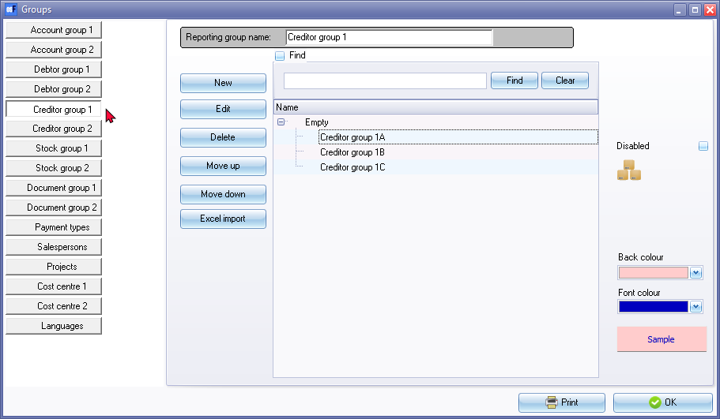

Creditor groups
This option allows you to set up to two Reporting groups for your Creditors (suppliers / vendors). Creditor groups allows you to group or categorise the Creditor accounts on which you would like to report. Reporting groups for creditors can vary depending on the specific needs and requirements of your business.
These Creditor groups can be linked to each creditor (supplier / vendor) account.
|
|
|

Examples of reporting groups for creditors (suppliers / vendors)
Here are a few examples of reporting groups that you can use for creditor accounts:
- Industry: You can create reporting groups based on the industries or sectors your creditors belong to. For example, you may have reporting groups such as "IT Suppliers," "Marketing Services," or "Office Supplies."
- Geographic region: If you work with creditors from different geographic regions, you can create reporting groups based on their locations. This can be helpful for analysing regional expenses or managing relationships with regional suppliers.
- Payment terms: You can create reporting groups based on the payment terms agreed upon with your creditors. For instance, you might have reporting groups such as "Net 30 Days," "Net 60 Days," or "Early Payment Discount."
- Vendor type: If you deal with different types of vendors or suppliers, you can categorize them using reporting groups. This could include groups like "Manufacturers," "Wholesalers," or "Service providers."
- Contractual agreements: If you have specific contracts or agreements in place with certain creditors, you can create reporting groups to track and manage those relationships. For example, you might have reporting groups for "Preferred suppliers" or "Exclusive suppliers."
Remember, these are just examples, and you can customize reporting groups based on the unique characteristics and needs of your business. The goal is to create groups that allow you to analyse and report on creditor data in a meaningful way that supports your financial management and decision-making processes.
Define reporting groups for creditors (suppliers / vendors)
To set reporting groups for Creditor accounts:
- On the Setup ribbon, select Setup → Groups. The "Groups (Account group 1)" default screen will be displayed..
- Click on the Creditor group 1 button.

- If you wish to rename the Reporting group name - Creditor group 1, over-type the description with your new description. This will change the description of the button for Creditor group 1.
- To add a new Group to the root directory or list, select the "REPORTING GROUP ROOT" on the list and click on the New button.
- Enter the name of your Creditor group 1 and click on "REPORTING GROUP ROOT" on the list.
- Repeat the process until you have entered all the Creditor groups, etc.
|
|
Adding sub groups for creditor groups: Select a Creditor group, for example; "Creditor group 1A" and click on the New button. Enter the name of your sub group. |
- If you need to add Reporting group 2 for Creditors, click on the Creditor group 2 button and repeat the process as for Creditor group 1.
- Click on the OK button to save your changes and close (exit) this screen.
|
|
Changing the sequence of groups for creditors: Select a Creditor group, for example; "Creditor group 1B" and click on the Move up or Move down button. This will list the creditor group according to your preferred sequence. |
|
|
You may click on the Print button to print a list of your creditor groups. |
|
|
You may set colours to display on the Creditor accounts grid screen. To do this, click on the Back colour button to set the rows background colour and the Font colour button to set the Font colour. To retain and save the selected colors, you also need to set both the "Back color" and the "Font color". |